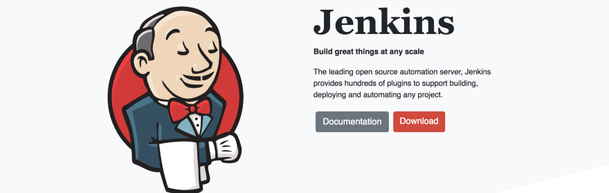
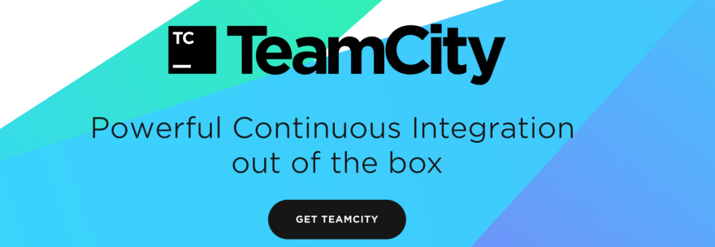
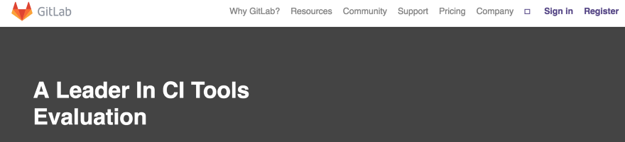
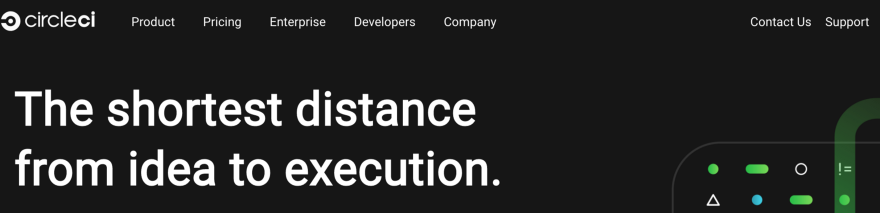
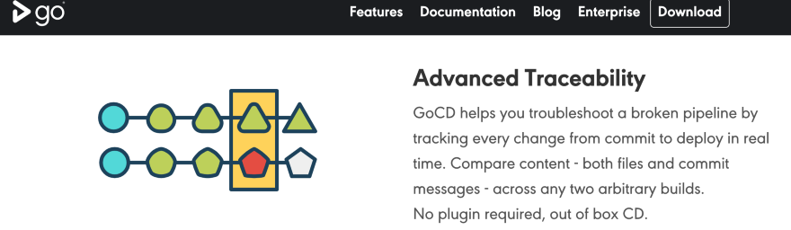
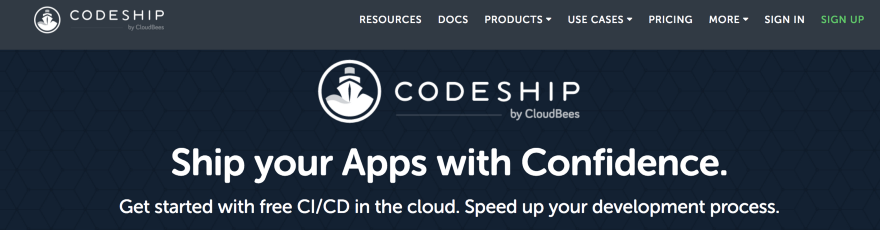
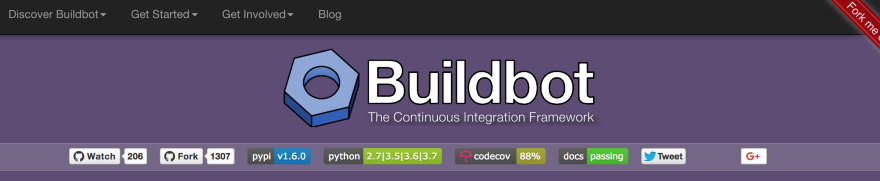

Системы непрерывной интеграции
Непрерывная интеграция (Continuous Integration, CI) и непрерывная поставка (Continuous Delivery, CD) представляют собой культуру, набор принципов и практик, которые позволяют разработчикам чаще и надежнее развертывать изменения программного обеспечения.
Определение CI/CD
Непрерывная интеграция — это методология разработки и набор практик, при которых в код вносятся небольшие изменения с частыми коммитами. И поскольку большинство современных приложений разрабатываются с использованием различных платформ и инструментов, то появляется необходимость в механизме интеграции и тестировании вносимых изменений.
С технической точки зрения, цель CI — обеспечить последовательный и автоматизированный способ сборки, упаковки и тестирования приложений. При налаженном процессе непрерывной интеграции разработчики с большей вероятностью будут делать частые коммиты, что, в свою очередь, будет способствовать улучшению коммуникации и повышению качества программного обеспечения.
Инструменты CI/CD помогают настраивать специфические параметры окружения, которые конфигурируются при развертывании. А также CI/CD-автоматизация выполняет необходимые запросы к веб-серверам, базам данных и другим сервисам, которые могут нуждаться в перезапуске или выполнении каких-то дополнительных действий при развертывании приложения.
Непрерывная поставка — это автоматическое развертывание приложения в целевое окружение. Обычно разработчики работают с одним или несколькими окружениями разработки и тестирования, в которых приложение развертывается для тестирования и ревью. Для этого используются такие CI/CD-инструменты как Jenkins, CircleCI, AWS CodeBuild, Azure DevOps, Atlassian Bamboo, Travis CI.
Непрерывная интеграция и непрерывная поставка нуждаются в непрерывном тестировании, поскольку конечная цель — разработка качественных приложений. Непрерывное тестирование часто реализуется в виде набора различных автоматизированных тестов (регрессионных, производительности и других), которые выполняются в CI/CD-конвейере.
Преимущества непрерывной интеграции
Непрерывная интеграция обеспечивает множество преимуществ, среди которых:
- Действительно раннее обнаружение проблем и исправление их до слияния кода.
- Более короткие и менее напряженные интеграции.
- Благодаря улучшению видимости повышается эффективность коммуникации.
- На поиск багов и ошибок уходит меньше времени.
- Больше не нужно ждать окончания тестирования кода.
- Повышается эффективность быстрой доставки ПО.
- Становится возможной непрерывная обратная связь об изменениях, что со временем может улучшить продукт.
Ниже описаны основные системы непрерывной интеграции, используемые разработчиками, и особенности их работы.
Jenkins
Jenkins это инструмент непрерывной интеграции с открытым исходным кодом. Написан на Java.
Jenkins предоставляет возможность тестирования кода в режиме реального времени, а также дает возможность получать отчеты об отдельных изменениях в обширной кодовой базе. Этот инструмент, главным образом, позволяет разработчикам быстро помечать и исправлять ошибки и баги в коде, а затем автоматически тестировать сборку кода.
Благодаря интуитивному пользовательскому интерфейсу Jenkins очень легко настраивать и конфигурировать. Он доступен на операционных системах Linux, Macintosh и Windows. Jenkins создан для крупномасштабных интеграций, благодаря чему можно легко распределять работу между различными машинами.
Наличие больше 1000 плагинов позволяет автоматизировать практически что угодно. В результате члены вашей команды смогут посвятить свое время исключительно тем задачам, с которыми не способны справиться машины.
TeamCity
TeamCity это сервер непрерывной интеграции корпоративного уровня. Он поддерживает большое количество мощного функционала, а также имеет очень надежную бесплатную версию для маленьких проектов (до 100 конфигураций сборки). Создан командой JetBrains.
Поставляется он с обширной поддержкой множества плагинов с открытым исходным кодом – как собственных продуктов JetBrains, так и сторонних приложений и инструментов. Также TeamCity предлагает потрясающую поддержку .NET.
Благодаря всему этому данный сервер непрерывной интеграции отличается высокой надежностью, не зависящей от запуска сборок. TeamCity имеет очень понятную интеграцию с системами контроля версий. Коммиты можно предварительно тестировать, а команды – запускать удаленно.
Travis CI

Travis это очень популярный инструмент непрерывной интеграции. Он бесплатен для проектов с открытым исходным кодом. Этот инструмент можно назвать не кроссплатформенным, а платформо-независимым, поскольку что это веб-ресурс.
Travis поддерживает много языков программирования, включая Node и PHP, а также много конфигураций сборки.
Этот инструмент поставляется с очень мощным API и интерфейсом командной строки. Его легко настраивать, а инсталлировать и вовсе не нужно. Travis интегрирован с такими сервисами коммуникации как Slack, HipChat и даже с электронной почтой. Для сборки приложений используются виртуальные машины. Допускается параллельное тестирование.
Gitlab CI
GitLab Continuous Integration это часть GitLab. По сути это веб-приложение с API, сохраняющим его состояние в базе данных. Используется для менеджмента проектов и предоставляет дружественный к пользователю, интуитивный интерфейс, а также все другие преимущества функционала GitLab.
Gitlab CI поставляется с реестром образов Docker, который называется реестром контейнеров. С помощью Gitlab вы можете изменять метаданные merge-реквеста без команд slash в комментарии.
Circle CI
Circle CI это гибкий сервер непрерывной интеграции, запускаемый в любой среде: в кросс-платформенном мобильном приложении, Python API сервере или кластере Docker. Инструмент нацелен на обозначение багов и улучшение качества приложения в целом (в долгосрочной перспективе).
Хорошо интегрируется с системами контроля версий, поддерживает много языков (JavaScript, C++, PHP, Python), а также Docker. Позволяет выбрать среду сборки, которая будет поставлена в виде бесплатной версии для ознакомления.
GoCD
GoCD это сервер непрерывной интеграции, используется для моделирования и визуализации сложных рабочих процессов. GoCD также является инструментом непрерывной доставки, таким образом, это прекрасное решение для CI/CD процессов.
Несмотря на высокую степень безопасности, при обработке аутентификации и авторизации пользователей GoCD сохраняет чистое дерево конфигурации. Благодаря такому функционалу как value stream map GoCD позволяет визуализировать весь рабочий процесс в одном месте. GoCD имеет очень быстро растущее сообщество пользователей. Для этого сервера регулярно создаются и добавляются тысячи плагинов.
Bamboo
Bamboo создан командой Atlassian – очень крупной компании, занимающейся созданием программ промышленного уровня. Это build-сервер непрерывной интеграции, осуществляющий сборку, тестирование и релизы. Он создан для поддержки его «сестринского» инструмента Jira от Atlassian и систем контроля версий. Bamboo поддерживает много языков программирования и технологий, например, AWS Buckets.
Этот инструмент имеет простой в использовании интерфейс. Он содержит встроенный git branching, а также интегрируется с HipChat. Сборки могут запускаться по мере обнаружения изменений в кодовой базе.
Codeship
Codeship это популярный инструмент непрерывной интеграции, автоматизирующий как процесс разработки, так и процесс деплоймента. Он запускает автоматизированный рабочий процесс, упрощая отправку в хранилище. Codeship имеет базовую и pro-версию. Можно настраивать уровни доступа для членов команды в каждом проекте. Поддерживает шифрованное внешнее кэширование образов Docker, имеет отличный функционал отладки, включая возможность отладки прямо из среды непрерывной интеграции. Также у Codeship очень приятная панель инструментов.
Помимо того что BuildBot имеет открытый исходный код, он поддерживает single-source репозиторий, автоматизированную сборку и даже деплоймент, т. е., это централизованные CI/CD. BuildBot поставляется с поддержкой разнообразных платформ тестирования.
Buildbot
Buildbot это фреймворк для сборки инструмента тестирования и непрерывной интеграции, автоматизирующий цикл компиляции/тестирования. Написан он на Python, является кроссплатформенным, имеет больше 3,7 тысяч звезд на GitHub. Этот фреймворк используется для валидации изменений во многих проектах, поскольку предлагает очень распределенное параллельное выполнение задач.
Полезные материалы
Что такое CI/CD? Разбираемся с непрерывной интеграцией и непрерывной поставкой.
10 популярных инструментов для CI/CD.
Основы CI/CD. Знакомство с Jenkins.
Руководство по CI/CD в GitLab для (почти) абсолютного новичка.
Codeship.io: бесплатный CI сервер для приватного репозитория Github/Bitbucket.